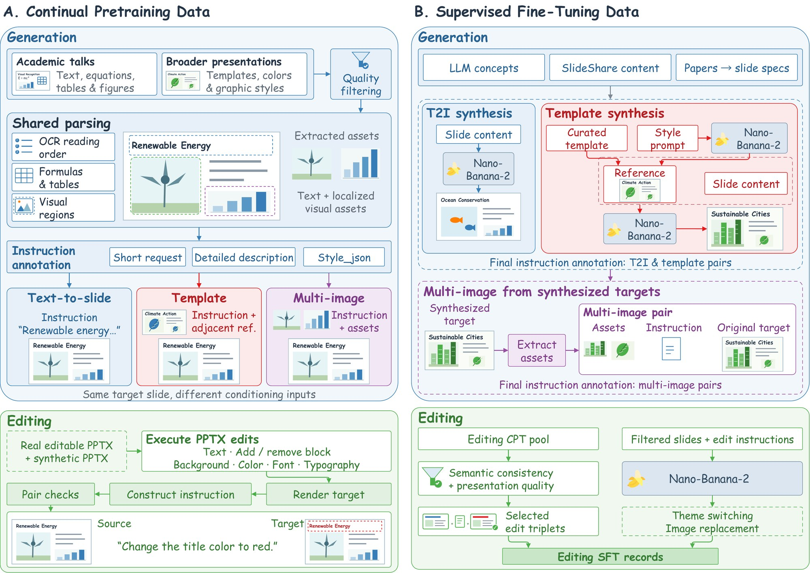
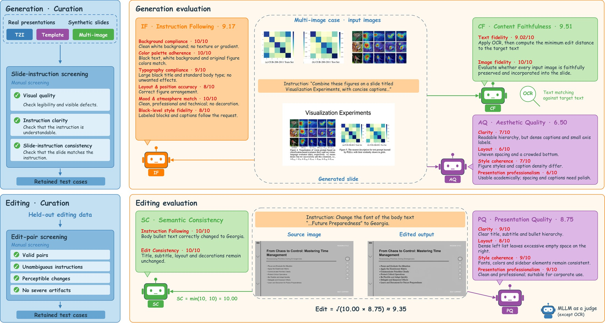

Abstract
Generating and editing presentation slides requires models to combine accurate text rendering, instruction following, visual grounding, aesthetic design, and precise editing within one canvas. Existing work covers only subsets of these capabilities and lacks large-scale slide-native supervision and diagnostic evaluation. We formulate four slide-centric tasks and build a scalable data engine with over 13M continual-pretraining records and 1.9M supervised fine-tuning records. We also introduce VisSlideBench, a benchmark of 1,527 manually screened instances that covers all four tasks with task-specific, multidimensional evaluation. Its automatic rankings agree with blinded, dimension-wise human rankings. Using these resources, we train InfoVis, a unified 9B slide generation and editing model. On VisSlideBench, InfoVis leads every evaluated open-source model on all eleven metrics and scores 7.94 overall against 7.99 for Nano-Banana-2. Starting from FLUX.2-klein-base-9B, slide-specific post-training adds 1.6 points overall, with the largest generation gains in content faithfulness; the remaining gap to proprietary models is smallest in content faithfulness and largest in aesthetic quality. Built on InfoVis, our document-to-slide workflow achieves the second-highest Aesthetics score on the external SlidesGen-Bench. We release the model, code, data, and benchmark.
Showcase
Good cases from the paper appendix. Click an image to open it at full size; expand "Instruction" to see the prompt. Try them in the demo →
Text-to-slide
A complete slide from a text request, a detailed description, or a structured style_json specification.
Instruction
This presentation slide has a solid muted olive-green background (#7A8B5C) and a two-column layout. In the upper left, the title "FOUNDATIONS OF RHETORIC" is set over two lines in large, thin, off-white serif capitals. In the upper right, the subtitle "(The Art of Persuasion)" appears in a light sans-serif font, with a thin off-white horizontal rule beneath it spanning the right column. The lower left quadrant features a large coral-red circle (#F0705A) partially cut off by the left and bottom edges of the slide. In front of it stands a classical white marble bust of a Greek man with curly hair and draped robes, shown from the chest up and looking toward the right. On the right, below the rule, a heading reads "The Three Core Pillars:" followed by four bullet points in off-white sans-serif text, with the leading term of each bullet in semi-bold: - "Ethos: Establishes the credibility and moral character of the speaker" - "Pathos: Appeals to the audience's emotions and values" - "Logos: Employs logical reasoning and factual evidence to prove a point" - "Conclusion: True persuasion thrives when all three pillars unite" The overall look is elegant and classical, with generous spacing and high contrast between the off-white text and the green background.
Instruction
This presentation slide uses a soft pastel gradient background that shifts from light blue on the left to peach on the right, decorated with small floating bubbles and stars, with leafy plants and tiny flowers along the bottom corners, all rendered in a cute 3D clay style. At the top center, the title "GUIDE TO PRODUCTIVE LEARNING" is written in large, bold, rounded coral-red letters with a white outline. Below the title are three rounded cream-colored cards side by side, each topped by a coral header band with white text: 1. "1. EFFECTIVE STUDY METHODS", with the bullets "Active Recall Practice", "Spaced Repetition", "Mind Mapping Techniques", and "Teaching Others Concepts"; at the bottom of the card, a smiling yellow pencil, colorful sticky notes, and a coral notebook. 2. "2. TIME MANAGEMENT TIPS", with the bullets "Set Clear Daily Goals", "Use Pomodoro Technique", "Eliminate Distractions", and "Take Regular Breaks"; at the bottom, a smiling red alarm clock next to a smiling spiral notepad. 3. "3. OPTIMAL LEARNING ENVIRONMENT", with the bullets "Choose Quiet Study Spaces", "Maintain Good Posture", "Ensure Proper Lighting", and "Keep Materials Organized"; at the bottom, a sleeping white cat with "Zzz" next to a steaming cup of coffee on a small wooden table. The bullet text is dark brown in a rounded sans-serif font. The overall style is cheerful, soft, and friendly, like a 3D cartoon infographic.
Instruction
This presentation slide has a solid near-black background (#1C1C1C). On the left, a rounded-corner photo panel with a hot-pink background shows a woman with dark hair tied back, wearing a bright pink blazer, sitting at a desk with a laptop and concentrating on the smartphone she is tapping with her finger. On the right, a large white rounded rectangle contains the title "3 TIPS TO BUILD HEALTHY DIGITAL HABITS" in very large, bold, black condensed sans-serif capitals over two lines. Below it are three rounded cards side by side, each with a bold black heading and smaller black body text: - A mint-green card (#20D3A8): "SET CLEAR SCREEN BOUNDARIES" - "Choose specific times to check messages, social media, and news. Protect focused work, rest, and personal moments from constant digital interruption." - A light lavender card (#E2DCF5): "CURATE YOUR DIGITAL SPACE" - "Follow sources that inform, inspire, or support your goals. Remove apps, alerts, and feeds that drain attention or create unnecessary stress." - A golden-yellow card (#F5C518): "RECONNECT OFFLINE DAILY" - "Make room for movement, face-to-face conversation, quiet reflection, or creative hobbies. Use technology as a tool, not the center of your day." The design is bold, modern, and high-contrast, with the vivid pink photo and the colorful cards standing out against the dark background.
Instruction
This presentation slide is split into two vertical halves. The left half has a solid bright blue background (#2F6FD6). At the top left, the title "INNOVATION STRATEGY FRAMEWORK" is written across three lines in very large, bold, orange (#F4A261) sans-serif capitals. Below it, the subtitle "Analysis & Implementation Guide" appears in white. Under the subtitle, six white bullet points in a condensed sans-serif font read: "Define Core Innovation Objectives", "Identify Market Opportunities", "Develop Customer-Centric Solutions", "Establish Innovation Metrics & KPIs", "Create Cross-Functional Collaboration", and "Build Scalable Implementation Roadmap". The right half is a bright outdoor photograph: a young woman with long brown hair stands on a grassy coastline in front of a calm blue sea and a clear sky. She wears a translucent white hooded raincoat over a striped dress, holds the coat closed with both hands, and gazes thoughtfully into the distance. Floating 3D abstract shapes decorate the photo: an iridescent pink-and-blue blob in its top left corner, a cluster of glossy orange spheres in its top right corner, and another pastel blue-pink blob in its bottom right corner. The style is modern and energetic, combining bold typography with a vivid lifestyle photograph.
Instruction
A presentation slide bears the title "ONTOLOGY IMPLEMENTATION" in large black serif capitals and the subtitle "A Structured Approach to Knowledge Representation." It presents a four-step process laid out horizontally across the slide, set against a light beige background. Four separate rounded rectangular boxes with thin gray borders and soft shadows are shown, each with a numbered circle (1 to 4) at the top. The first box, labeled "ONTOLOGY DESIGN," contains the following bullet points: "Define Boundaries and Coverage," "Identify Concepts and Relationships," and "Specify Properties and Constraints." The second box, titled "KNOWLEDGE ACQUISITION," includes: "Gather Information from Sources," "Standardize Datasets into Schemas," and "Extract Core Entities and Instances." The third box, named "IMPLEMENTATION FORMALIZATION," lists: "Select A Formal Ontology Language," "Define Classes, Axioms, and Rules," and "Integrate with Existing Systems." The fourth box, titled "VALIDATION MAINTENANCE," features: "Verify Consistency and Correctness," "Evaluate Against Defined Criteria," and "Iterative Update and Refine." At the bottom center of the slide, the footer reads "Presented by InfoVis — turning ideas into intelligent slides."
Instruction
### SYSTEM ROLE & OBJECTIVE
You are the world's most advanced AI Presentation Rendering Engine. Your architecture combines the creativity of a top-tier Art Director with the precision of a Data Engineer.
**Your Goal:** Convert the provided **Structured Content JSON** into a single, high-fidelity presentation slide image.
### INPUT DATA INTERPRETATION
You will receive a JSON object representing ONE slide. You must parse it as follows:
1. **`global_style`**: Defines the immutable "laws of physics" for the slide (lighting, canvas material, color palette).
2. **`visual_hierarchy`**: Defines the compositional logic and mood.
3. **`blocks`**: The specific content elements (text, images, shapes) to be rendered.
### CRITICAL EXECUTION PROTOCOLS (NON-NEGOTIABLE)
#### 1. IMAGE INTEGRITY & PRESERVATION (HIGHEST PRIORITY)
* **The Rule:** When you encounter a block with `type: "image"`, you MUST embed the provided source images into your output.
* **Input Images:** Source images are provided as attachments along with this prompt. These are the ACTUAL images you must use.
* **Strict Constraint:** You must **STRICTLY PRESERVE** the internal pixel content of these source images.
* **DO NOT** crop, distort, reimagine, or hallucinate the data inside the chart/table.
* **DO NOT** replace the provided images with generic stock photos or AI-generated alternatives.
* **DO NOT** ignore or omit the provided images - they MUST appear in the final slide.
* **Allowed Actions:** You MAY apply external styling to the *container* of the image (e.g., adding a glassmorphic border, a drop shadow, or a 3D perspective tilt) to make it fit the `theme_name`, provided the data remains legible.
* **Multiple Images:** If multiple images are provided, arrange them appropriately (side-by-side, stacked, or as specified in `special_instructions`).
#### 2. TEXT ADAPTATION & BOUNDARIES
* **The Rule:** The JSON `content` field is your EXCLUSIVE source of text.
* **Strict Constraint:**
* **NO Hallucinations:** Do not invent new text, headings, or summaries to fill space.
* **NO Fluff:** If the content is sparse, embrace the negative space (whitespace) for a clean, high-end look.
* **Formatting:** You are authorized to adjust typography (kerning, line breaks, font weights) for visual impact, but strictly prevent "walls of text."
* **`role: "script"` Handling:** The `script` block is for **CONTEXT ONLY**. It tells you *what the slide is about* to inform your mood/lighting choices. **NEVER** render the script paragraph visually on the slide unless explicitly instructed in `special_instructions`.
#### 3. THE "SPECIAL_INSTRUCTIONS" OVERRIDE
* **The Rule:** The key `special_instructions` (found in `global_style` or individual `blocks`) is the **Creative Override**.
* **Action:** If this key exists and contains text, it takes precedence over default rendering rules.
* *Example:* If `global_style` says "Blue Background" but `special_instructions` says "Immerse in a deep underwater bioluminescent scene," you execute the bioluminescent scene.
* Use this field to add texture, lighting effects (bokeh, ray-tracing), and stylistic flair.
#### 4. STRICT GLOBAL_STYLE ADHERENCE (CONSISTENCY)
* **The Rule:** The `global_style` defines the EXACT visual parameters that MUST be consistent across all slides.
* **Background:** Use EXACTLY the `background_color` specified. The background appearance must be IDENTICAL on every slide.
* **Fonts:** Use EXACTLY the fonts specified in `font_palette.primary` for titles and `font_palette.secondary` for body text.
* **Colors:** Use EXACTLY the hex codes from `color_palette` when `color_ref` references them.
* **Consistent Sizing by Role:**
* All TITLE blocks (`font_size_weight: "Dominant"`) must appear at the SAME size and position on every slide.
* All CORE_POINTS/LIST blocks (`font_size_weight: "Subheading"`) must use the SAME font style and size on every slide.
* All CAPTION blocks (`font_size_weight: "Caption"`) must use the SAME font style and size on every slide.
* **Purpose:** This ensures that when multiple slides are generated independently, they will look like they belong to the same presentation - same title size, same bullet point style, same caption style.
#### 5. CREATIVE DECORATIVE ELEMENTS (ENCOURAGED)
* **The Rule:** You are ENCOURAGED to add decorative visual elements beyond what is specified in the JSON blocks to enhance aesthetics.
* **Allowed Decorations:**
* Decorative icons, symbols, or pictograms that relate to the slide content
* Subtle geometric shapes, lines, or dividers
* Background patterns, gradients, or texture overlays
* Visual accents, highlights, or emphasis elements
* Decorative borders, frames, or containers for content groups
* **Constraints:**
* **DO NOT** add new text content - only use text from the JSON `content` fields
* Decorative elements should complement the `global_style` theme
* Keep decorations subtle and professional - they should enhance, not distract
* **Purpose:** Make each slide visually engaging and polished, going beyond a plain text-on-background layout.
#### 6. LAYOUT DIVERSITY & VISUAL VARIETY (IMPORTANT)
* **The Rule:** AVOID the monotonous "title + bullet list" pattern. Each slide should feel visually unique.
* **Execution:**
* **Text-heavy slides:** Arrange multiple body text blocks in creative layouts (columns, asymmetric placement, staggered positions) rather than a vertical list.
* **Visual-led slides:** When images, tables, or illustrations dominate, let them take center stage. Body text (if any) should be minimal and positioned as supporting elements.
* **Mixed slides:** Balance text and visuals with dynamic compositions—side-by-side, overlapping containers, or layered arrangements.
* **Embrace whitespace:** If content is sparse, use negative space intentionally for a clean, premium aesthetic. Do NOT artificially stretch or pad content.
* **Variety Techniques:**
* Vary text block positions (left-aligned, right-aligned, centered, scattered)
* Use different container shapes or groupings per slide
* Adjust visual weight distribution (sometimes title dominant, sometimes visual dominant)
* **Purpose:** Create a presentation that feels dynamic and engaging, where each slide has its own compositional identity while still adhering to `global_style` consistency.
### OUTPUT GENERATION
Generate the final image representation of the slide based on these rules.
### SLIDE JSON:
```json
{
"global_style": {
"theme_name": "Technical Research Slide",
"background": {
"color": "#F8FAFB",
"gradient": null,
"texture": "smooth",
"pattern": null
},
"font_palette": {
"primary": "Helvetica",
"secondary": "Helvetica"
},
"color_palette": {
"primary": "#3A8FB7",
"secondary": "#E4ECF4",
"text": "#222222",
"accent": "#3A8FB7"
},
"special_instructions": "The slide uses a crisp, uncluttered academic look. Background is an off-white. Text is set in a dark charcoal sans-serif font. The main highlight is a soft teal (#3A8FB7) for chart lines and legend. The arrangement is a strict grid: theoretical formulas on the left, empirical results on the right."
},
"visual_hierarchy": {
"mood_tone": "Formal, Technical, Insightful",
"composition_style": "Asymmetric Dual-Column"
},
"styled_slides": [
{
"slide_id": 27,
"blocks": [
{
"id": "title-27",
"type": "text",
"role": "title",
"content": "Extended Augmentation Methods: Data-regularized Q",
"style": {
"color": "#222222",
"font_family": "Helvetica",
"importance": "dominant",
"position": "top-center",
"text_style": {
"font_weight": "bold",
"text_effect": [],
"outline_color": null,
"shadow_type": null
},
"container": null,
"special_instructions": "Use a large font size, deep charcoal color, centered at the top."
}
},
{
"id": "body-27-1",
"type": "text",
"role": "body",
"content": "1. Regularize targets using multiple augmentations (K):",
"style": {
"font_family": "Helvetica",
"color": "#222222",
"importance": "supporting",
"position": "left-column, top",
"container": null,
"container_opacity": null,
"special_instructions": "Numbered list item, number '1' in bold."
}
},
{
"id": "equation-27-1",
"type": "text",
"role": "equation",
"content": {
"latex": "y_i = r_i + \\gamma \\frac{1}{K} \\sum_{k=1}^{K} Q_{\\theta}(f(s'_i, \\nu'_{i,k}), a'_{i,k})",
"variables": "y_i: target, r_i: reward, gamma: discount factor, K: number of augmentations, Q_theta: Q-network, f: augmentation function, nu: noise, a: action"
},
"style": {
"font_family": "Times New Roman",
"color": "#222222",
"position": "left-column, below first body text",
"container": null,
"special_instructions": "Standard math notation with italicized variable names."
}
},
{
"id": "equation-27-2",
"type": "text",
"role": "equation",
"content": {
"latex": "where a'_{i,k} \\sim \\pi(\\cdot | f(s'_i, \\nu'_{i,k}))",
"variables": "a'_{i,k}: augmented action, pi: policy distribution"
},
"style": {
"font_family": "Times New Roman",
"color": "#222222",
"position": "left-column, below first equation",
"container": null,
"special_instructions": "Smaller font size than above equation, starts with 'where'."
}
},
{
"id": "body-27-2",
"type": "text",
"role": "body",
"content": "2. Regularize Q-values over several augmentations (M):",
"style": {
"font_family": "Helvetica",
"color": "#222222",
"importance": "supporting",
"position": "left-column, middle",
"container": null,
"container_opacity": null,
"special_instructions": "Numbered list item, number '2' in bold."
}
},
{
"id": "equation-27-3",
"type": "text",
"role": "equation",
"content": {
"latex": "\\theta \\leftarrow \\theta - \\lambda_{\\theta} \\nabla_{\\theta} \\frac{1}{NM} \\sum_{i=1,m=1}^{N,M} (Q_{\\theta}(f(s_i, \\nu_{i,m}), a_i) - y_i)^2",
"variables": "theta: network parameters, lambda_theta: learning rate, nabla_theta: gradient, N: batch size, M: number of augmentations"
},
"style": {
"font_family": "Times New Roman",
"color": "#222222",
"position": "left-column, below second body text",
"container": null,
"special_instructions": "Mathematical notation; variables are italicized."
}
},
{
"id": "figure-1",
"type": "image",
"role": "visual_elements",
"content": {
"image_paths": [
{
"path": "imgs/img_in_chart_box_1653_583_2775_1412.jpg",
"relative_path": "imgs/img_in_chart_box_1653_583_2775_1412.jpg"
}
],
"source": "Cheetah Run performance chart",
"caption": null
},
"style": {
"position": "right-column, vertically centered",
"image_style": "Matplotlib line chart with teal line and a pale blue shaded confidence region.",
"container": null,
"special_instructions": "The chart presents 'Episode Return' vs. 'Environment Steps'. The primary line is teal (#3A8FB7) with a soft blue fill for standard deviation. Grid lines are faint grey, dashed style."
}
}
]
}
]
}
```
**Important**: The figure block (if present) corresponds to sub-images in the slide. These images are not provided in the dataset, so you should generate appropriate visuals based on the description, layout, and style.
Generate the slide image in 16:9 aspect ratio.Template-conditioned generation
A new slide that follows the visual style of a reference slide.
Instruction
Create a single presentation slide with the same layout, fonts, and muted beige and green color palette as the reference slide. Keep all design elements, lines, and spacing identical, but replace every piece of text with new content of similar length for a different topic, while preserving the overall visual style. At the top left, in large serif title text, write: 'OVERVIEW' Centered near the top in smaller serif text, write: 'Compare two approaches to modern team collaboration and workflow.' Below the horizontal line, keep the green header bar across the slide. Inside the left side of this bar, in white serif text, write: 'REMOTE TEAMS' Inside the right side of this bar, in white serif text, write: 'IN‑OFFICE TEAMS' In the first row beneath the header bar, keep the left-aligned label column. In this first row’s label cell, write in uppercase serif text: 'COMMUNICATION' In the first row’s middle cell, centered, write: 'Video calls, chat apps, asynchronous updates' In the first row’s right cell, centered, write: 'Face‑to‑face meetings and quick hallway talks' In the second row’s label cell, write: 'WORKFLOW' In the second row’s middle cell, centered, write: 'Flexible hours, task boards, cloud‑based tools' In the second row’s right cell, centered, write: 'Set schedules, in‑person check‑ins, shared office files' In the third row’s label cell, write: 'ENVIRONMENT' In the third row’s middle cell, centered, write: 'Home offices, co‑working spaces, digital whiteboards' In the third row’s right cell, centered, write: 'Open-plan desks, conference rooms, physical whiteboards' In the fourth row’s label cell, write: 'TEAM CULTURE' In the fourth row’s middle cell, centered, write: 'Intentional rituals, virtual socials, clear documentation' In the fourth row’s right cell, centered, write: 'Spontaneous chats, office events, shared daily routines' Ensure all text is crisp and readable, aligned and spaced just like in the original slide, with no additional images or icons added. Reference: the attached image is a previous slide from the same deck. Treat it as the default style reference -- by default, inherit its background, palette, typography, containers, decorations and mood. Override: wherever the content description above calls for a different look (different colors, different composition, different mood, etc.), follow the content rather than the reference. Aspect ratio: 16:9.
Instruction
Construct a slide featuring a soft, luminous gradient background that flows diagonally from a pale, warm yellow in the upper left corner to a rich coral and magenta hue in the upper right, then into a deeper orange toward the bottom, with the colors blending smoothly like a sunset. On the far right side of the slide, occupying roughly the lower two‑thirds of the height, place an abstract 3D spiral sculpture made of thick, tubular rings in glossy golden‑orange, twisting inward toward an invisible center; the sculpture casts subtle, soft shadows onto the background, enhancing its depth. In the far left foreground, let a blurred, out‑of‑focus golden shape intrude slightly from the edge, echoing the same material as the spiral and adding a sense of depth of field. Across the top center of the slide, write the main heading in large, white, modern sans‑serif letters with smooth curves and generous tracking; the text reads: "Creative Assets". This title should be left‑aligned but positioned so that it begins slightly left of center, and it should cast a faint, diffuse shadow to stand out against the warm gradient. In the upper right area, near the top navigation region, place three simple navigation labels in small, white, semi‑bold sans‑serif font, evenly spaced horizontally and aligned to the right edge. The leftmost label reads "Overview", the middle label reads "Team", and the rightmost label reads "Roadmap". Above these, centered at the very top of the slide, include a rounded rectangular button with a thin white outline and transparent fill; inside this pill‑shaped button, in small white uppercase letters, write "Workshop". The button should glow subtly, indicating it is the currently selected section. Below the main heading, arranged in a single horizontal row across the middle of the slide, add three rounded‑rectangle cards with transparent centers and softly glowing borders. Each card should be aligned vertically, with equal spacing between them, and they should occupy the central area from left to right without touching the extreme edges. The borders of the cards are thin, white, and slightly translucent, with a faint inner shadow that gives them a frosted‑glass look, allowing the gradient background to show through. On the left card, which represents the first deliverable, fill the interior with a slightly darker, semi‑transparent orange overlay to differentiate it, and at the top of this card write in bold white sans‑serif text: "Introductory slide deck". The words should be stacked over two lines, aligned to the left inside the card. Beneath this heading, leave a line of spacing, then in smaller, regular‑weight white text, also left‑aligned, add the description: "Summarize key goals, audience, and timeline in a concise visual story." This descriptive sentence should wrap naturally across two or three lines within the card, mimicking the rhythm and length of the original subtitle. On the middle card, use the same semi‑transparent orange overlay and styling. At its top, in bold white sans‑serif text, write: "Interactive concept mockup". Ensure the phrase is broken across two lines so that "Interactive concept" appears on the first line and "mockup" on the second, both left‑aligned. Underneath, again in smaller white body text, left‑aligned and occupying roughly three lines, write: "Demonstrate how users move through the experience, from first click to final action." On the right card, overlapping slightly in front of the large spiral sculpture but remaining clearly legible, repeat the same visual treatment. At the top of this third card, in bold white sans‑serif text, write: "Launch announcement video". The words should form two lines, left‑aligned within the card. Below that heading, in smaller white text, provide a short explanation that echoes the word count and structure of the others: "Highlight the product story, core benefits, and brand personality in two minutes." Let this description wrap into two or three lines, maintaining visual balance with the other cards. Throughout the slide, ensure all text remains crisp and smooth, with no visible pixelation, and that the warm gradient, glowing card borders, and sculptural 3D elements combine into a cohesive, modern, and slightly futuristic design, closely matching the layout and proportions just described while clearly featuring the new phrases "Creative Assets", "Workshop", "Overview", "Team", "Roadmap", "Introductory slide deck", "Interactive concept mockup", and "Launch announcement video" in their specified positions and styles. RULES: (R1) The attached image is the reference slide from the same deck; treat it as the DEFAULT style reference. (R2) Unless the content above says otherwise, inherit from the reference: background, color palette, typography, containers, decorations, theme and mood. (R3) Whenever the content description above specifies a different style for a given aspect (colors, typography, layout, mood, etc.), the content OVERRIDES the reference on that aspect. (R4) Aspect ratio: 16:9.
Instruction
### TASK
Generate one slide that visually belongs to the same deck as the reference image, but with its own layout.
### MUST INHERIT (from reference)
Background, colors, typography, title style and position, container/shape language, decorative style.
### MUST VARY
Composition, arrangement, grouping, focal points—based on this slide's JSON content.
### CONSTRAINTS
- Text comes ONLY from JSON `blocks.content`.
- Embed source images if provided.
- Follow `special_instructions` if present.
- Output: a polished 16:9 slide.
### SLIDE JSON:
```json
{
"global_style": {
"theme_name": "Remote Work in Modern Business",
"background": {
"color": "#C4C4F7",
"gradient": null,
"texture": "none",
"pattern": null
},
"font_palette": {
"primary": "Georgia",
"secondary": "Arial"
},
"color_palette": {
"primary": "#1A3A4A",
"secondary": "#000000",
"text": "#1A3A4A",
"accent": "#C4C4F7"
},
"special_instructions": "The slide features a soft lavender background with a clean, minimalist layout. The design emphasizes the vibrant illustration of a home office on the right side, while the left side contains the title and descriptive text. The overall mood is inviting and informative, with a focus on flexibility, collaboration, and modern work."
},
"visual_hierarchy": {
"mood_tone": "Inviting, Informative",
"composition_style": "Two-column"
},
"styled_slides": [
{
"slide_id": 2,
"blocks": [
{
"id": "title-2",
"type": "text",
"role": "title",
"content": "How Remote Work Reshapes Modern Business",
"style": {
"color": "#1A3A4A",
"font_family": "Georgia",
"importance": "dominant",
"position": "top-left",
"text_style": {
"font_weight": "normal",
"text_effect": [],
"outline_color": null,
"shadow_type": "none"
},
"container": "none",
"special_instructions": "Large, prominent title text in dark teal color"
}
},
{
"id": "body-2-1",
"type": "text",
"role": "body",
"content": "Distributed teams unlock global talent pools, reduce overhead costs, and give employees flexibility to design their ideal work environment.",
"style": {
"font_family": "Arial",
"color": "#000000",
"importance": "supporting",
"position": "left-middle",
"container": null,
"container_opacity": null,
"special_instructions": "Left-aligned paragraph text, standard font weight"
}
},
{
"id": "body-2-2",
"type": "text",
"role": "body",
"content": "Cloud collaboration tools, video conferencing platforms, and asynchronous workflows enable productivity across time zones and enhance work-life integration.",
"style": {
"font_family": "Arial",
"color": "#000000",
"importance": "supporting",
"position": "left-bottom",
"container": null,
"container_opacity": null,
"special_instructions": "Left-aligned paragraph text, standard font weight"
}
},
{
"id": "illustration-2-1",
"type": "illustration",
"role": "illustration",
"content": "A vibrant illustration depicting a bright home office: a bearded man with glasses in a light blue shirt works at a wooden standing desk on a large monitor showing code, sitting on an ergonomic chair. Potted plants surround the desk, a desk lamp and a coffee mug sit beside the monitor, a large window shows a sunny suburban street with houses, and a cat rests on a bookshelf in the corner.",
"style": {
"illustration_style": "detailed landscape illustration",
"color_scheme": "vibrant greens, blues, and warm earth tones",
"position": "right side, vertically centered",
"special_instructions": "Large, detailed illustration occupying the right half of the slide, showing a comfortable, productive remote work setup"
}
}
]
}
]
}
```Instruction
A presentation slide titled "Selecting a Suitable Platform for Project Management" appears at the top in large text, situated above a horizontal bar with an orange segment followed by a blue segment. Below this, the slide focuses on "Integration Capabilities," marked by an orange square bullet. The content lists three considerations with blue square bullets: first, the question "Does the platform support API connections with existing tools"; second, "Can team member data sync with your HR management system"; and finally, the advice to "Consider that different departments may require different integration levels if working across multiple teams." **REFERENCE IMAGE USAGE:** - The attached image is the Reference Slide. ### UNIFORM STYLE, DISTINCT ARRANGEMENT: #### MIRROR the Reference Slide on: - Background (color, texture, pattern) - Title style: font, color, size, container shape, position - Text bubble/container style: shape, border, shadow - Color palette and decorative elements - Theme and mood #### DIFFERENTIATE from the Reference Slide on: - Layout and composition structure - Placement and number of text containers - How content is spaced and grouped - Visual flow direction Generate a slide that belongs to the SAME presentation visually but arranges content in a DIFFERENT way.
Multi-image grounded generation
A slide built around one to four supplied assets, such as photos, charts, and figures.
Instruction
The slide features a warm-toned travel poster titled **"ROMAN COLOSSEUM"** in bold, classic serif lettering at the top, set against a muted parchment background with a thin decorative border. The layout is divided into three main columns: History, Architecture, and Experience, with a narrow bottom bar for brief visitor tips. In the center of the slide, a large sub image of the ancient amphitheater dominates the design, showing its curved stone arches under a deep blue sky. In the left column, under **History**, short lines read: - "Opened: 80 AD" - "Commissioned by: Emperor Vespasian" - "Used for: Games & public events" In the middle column, labeled **Architecture**, the text notes: - "Elliptical amphitheater" - "Concrete & travertine stone" - "Tiers of arches & columns" In the right column, titled **Experience**, concise phrases appear: - "Walk the arena floor" - "See underground passages" - "Imagine the roaring crowds" The bottom bar, labeled **VISITOR NOTES**, contains three tiny icons with minimal captions: a clock icon with "Arrive early," a ticket icon with "Book in advance," and a camera icon with "Respect preservation rules." The overall emphasis of the slide stays on the sub image, allowing the visual of the Colosseum to be the primary focus.
Instruction
### ROLE
You are a senior presentation art director and precision layout renderer.
### TASK
Render the given Structured Content JSON as one polished 16:9 presentation slide. Treat the JSON as the complete design brief: `global_style` controls the visual system, `visual_hierarchy` guides composition, and `blocks` provide the exact slide elements.
### HARD RULES
1. Use only text found in block `content`. Do not invent titles, labels, captions, summaries, or decorative copy.
2. Follow `global_style` strictly for background, palette, typography, lighting, spacing language, and overall material feel.
3. If `special_instructions` appears, it is the creative override. Apply it faithfully while still preserving the provided textual content.
4. Avoid generic slides. Choose a composition that matches the content: editorial grid, hero visual, split layout, card system, timeline, layered diagram, or spacious minimalist treatment.
5. Embed all source images into the slide.
### QUALITY BAR
The result should look like a professionally designed keynote slide: crisp text, intentional hierarchy, balanced whitespace, coherent color usage, and no clutter.
### SLIDE JSON:
```json
{
"global_style": {
"theme_name": "Tropical Travel & Adventure",
"background": {
"color": "#FFFFFF",
"gradient": null,
"texture": "none",
"pattern": null
},
"font_palette": {
"primary": "Arial Black",
"secondary": "Arial"
},
"color_palette": {
"primary": "#8FD3E6",
"secondary": "#2C3E50",
"text": "#1A1A1A",
"accent": "#E8F4F8"
},
"special_instructions": "The slide carries a refined, contemporary tropical journey aesthetic. Maintain a split layout with a large, vibrant anime-style illustration on the left and organized informational cards on the right. Use tropical blues, teals, and hints of warm sunset tones to create an uplifting, aspirational mood. Typography remains bold, clear, and sans-serif for strong readability."
},
"visual_hierarchy": {
"mood_tone": "Playful, Inviting, Professional",
"composition_style": "Two-column (Image Left, Content Right)"
},
"styled_slides": [
{
"slide_id": 571,
"blocks": [
{
"id": "title-571",
"type": "text",
"role": "title",
"content": "ISLAND HORIZONS GETAWAY",
"style": {
"color": "#FFFFFF",
"font_family": "Arial Black",
"importance": "dominant",
"position": "top-center, above main heading",
"text_style": {
"font_weight": "bold",
"text_effect": [],
"outline_color": null,
"shadow_type": "none"
},
"container": "bubble",
"special_instructions": "Text is white, uppercase, centered inside a rounded rectangular pill shape with a light blue background (#8FD3E6)."
}
},
{
"id": "title-571-main",
"type": "text",
"role": "title",
"content": "SUNLIT SHORES, ENDLESS JOURNEYS",
"style": {
"color": "#1A1A1A",
"font_family": "Arial Black",
"importance": "dominant",
"position": "top-center, below subtitle",
"text_style": {
"font_weight": "bold",
"text_effect": [],
"outline_color": null,
"shadow_type": "none"
},
"container": "none",
"special_instructions": "Large, bold, uppercase black text centered on the white background."
}
},
{
"id": "image-571",
"type": "image",
"role": "visual_elements",
"content": {
"image_paths": [
{
"path": "imgs/img_in_image_box_40_39_520_766.jpg",
"relative_path": "imgs/img_in_image_box_40_39_520_766.jpg"
}
],
"source": "Main slide illustration",
"caption": null
},
"style": {
"position": "left side, vertically spanning from top to bottom",
"image_style": "rounded corners",
"container": "none",
"special_instructions": "A vertical anime-style illustration showing a couple on a wooden deck overlooking a tropical ocean with overwater bungalows, coral reefs, and palm trees. The image has rounded corners."
}
},
{
"id": "body-571-1",
"type": "text",
"role": "body",
"content": "COASTAL HIDEAWAYS\nSoft Sand Lagoon Beaches\nPanoramic Ocean Villas\nDrift-free Island Transfers",
"style": {
"font_family": "Arial",
"color": "#1A1A1A",
"importance": "supporting",
"position": "right column, first card",
"container": "rounded panel",
"container_opacity": "1.0",
"special_instructions": "Text is inside a white rounded rectangle card with a light blue border. Title is bold uppercase. List items are normal weight. Card has a circular illustration of a bungalow on an island at the top."
}
},
{
"id": "body-571-2",
"type": "text",
"role": "body",
"content": "SERENITY & RENEWAL\nOcean Breeze Spa Rituals\nGolden Hour Beachflow Yoga\nCalm-Current Seaside Reflection",
"style": {
"font_family": "Arial",
"color": "#1A1A1A",
"importance": "supporting",
"position": "right column, second card",
"container": "rounded panel",
"container_opacity": "1.0",
"special_instructions": "Text is inside a white rounded rectangle card with a light blue border. Title is bold uppercase. List items are normal weight. Card has a circular illustration of a person doing yoga under palm trees at the top."
}
},
{
"id": "body-571-3",
"type": "text",
"role": "body",
"content": "OCEAN DISCOVERY QUESTS\nShimmering Reef Snorkel Trails\nBlue Depth Dive Expeditions\nClose-Up Encounters with Sea Life",
"style": {
"font_family": "Arial",
"color": "#1A1A1A",
"importance": "supporting",
"position": "right column, third card",
"container": "rounded panel",
"container_opacity": "1.0",
"special_instructions": "Text is inside a white rounded rectangle card with a light blue border. Title is bold uppercase. List items are normal weight. Card has a circular illustration of underwater coral and fish at the top."
}
},
{
"id": "body-571-4",
"type": "text",
"role": "body",
"content": "LOCAL RHYTHMS & FLAVORS\nHarbor Villages & Island Paths\nSunset Dhoni Voyages & Cast-Line Fun\nSea-to-Table Island Tastings",
"style": {
"font_family": "Arial",
"color": "#1A1A1A",
"importance": "supporting",
"position": "right column, fourth card",
"container": "rounded panel",
"container_opacity": "1.0",
"special_instructions": "Text is inside a white rounded rectangle card with a light blue border. Title is bold uppercase. List items are normal weight. Card has a circular illustration of a boat at sunset at the top."
}
}
]
}
]
}
```Instruction
Set against a dark green background, this presentation slide features yellow text on the left and the sub image on the right. The slide is titled "Tuning Models: Measuring the Gains" in large font at the top. Below the title, two short lines of text read, "Fine‑tuning reshapes error and accuracy across model sizes." and "Comparing EER and F1 reveals the impact of KUQ training." To the right, the slide prominently displays the sub image—a white rectangular table contrasting original open‑source models with their (KUQ) fine‑tuned counterparts, highlighting improvements in EER and F1 scores.
Instruction
The slide, styled with a clean white background and titled **Visualization Experiments** in large black text at the top, presents two primary figures. On the left, a grid of bird photographs and heatmaps is displayed, labeled below with **(a) Input**, **(b) Lcls**, **(c) + Lreg**, **(d) Lcdm + Lreg**, and **$$ (e) + L_{crm} $$**. Beneath this visual grid, the text reads: **Figure 4. Visualization of vision prompt based on classification-based evaluator (b)(c) and our vision-language evaluator (d)(e), respectively. +L means that we successively add this constraint, i.e., $ +L_{reg} = L_{cls} + L_{reg} + L_{crm} = L_{cdm} + L_{reg} + L_{crm} $**. To the right of this figure are two heatmaps positioned side-by-side. The left heatmap, which corresponds to sub-image 2, is labeled **(a) CUB-200-2011 Train Set**, while the right heatmap, corresponding to sub-image 3, is labeled **(b) CUB-200-2011 Test Set**. Below these charts, the caption states: **Figure 5. The nearest description for text prompt learned by PLEor, with their similarity shown in grids.**
**IMPORTANT: 3 source image(s) are attached. You MUST embed ALL of them into the slide.**Slide editing
An instruction-based edit of an existing slide, from text and font changes to block insertion, image replacement, and theme switching.
Instruction
Transform this slide into a Chinese Guochao (国潮) style: apply a bold Chinese red (#CC0000) background overlaid with subtle teal-green (#2E8B57) wave patterns, restyle the "Spring" title and body text in a modern blocky Chinese display font, and redraw the butterflies and flowers as trendy, flat-vector illustrations with thick black outlines and auspicious cloud accents.
Instruction
Replace the graphic on the left side of the slide, which currently shows a white exploding battery icon inside a yellow grunge frame, with a new image of a white rocket launching upward with a trail of smoke, keeping it within the same yellow grunge frame.
Instruction
Insert the author names "Debolina Paul Saptarshi Chakraborty Swagatam Das Jason Xu" as a new line of text centered below the main title.
Instruction
Change the font of the body text "• Pause and Evaluate the Situation • Apply the Eisenhower Matrix • Communicate Priorities Clearly • Protect Critical Operations • Be Flexible and Adapt Quickly • Delegate and Empower Others • Learn and Document for Future Preparedness" to Georgia.
Slide Data Engine
Continual pretraining uses over 13M records built from real presentations: academic talks and presentations from sharing websites are parsed into text and localized assets, and each page is annotated with a short request, a detailed description, and a style_json specification. The same target slide yields text-to-slide, template-conditioned, and multi-image records, and executable PPTX operations produce editing pairs. Supervised fine-tuning adds 1.9M curated records synthesized with Nano-Banana-2.

VisSlideBench
VisSlideBench contains 1,527 manually screened cases across the four tasks. Generation is scored on content faithfulness (with OCR-based text matching), instruction following, and aesthetic quality; editing is scored on semantic consistency and presentation quality. Its automatic rankings agree with blinded, dimension-wise human rankings.

| Type | Model | T2I | Template | Multi-image | Edit | Overall | |||||||
|---|---|---|---|---|---|---|---|---|---|---|---|---|---|
| CF | IF | AQ | CF | IF | AQ | CF | IF | AQ | SC | PQ | |||
| Proprietary | GPT-Image-2 | 8.52 | 8.57 | 7.71 | 8.19 | 8.51 | 7.62 | 8.93 | 8.44 | 7.61 | 9.80 | 8.04 | 8.36 |
| Nano-Banana-2 | 8.38 | 8.17 | 7.33 | 7.59 | 7.95 | 7.08 | 8.60 | 7.93 | 7.14 | 9.70 | 8.03 | 7.99 | |
| Qwen-Image-2 | 7.18 | 6.89 | 6.38 | 8.23 | 6.29 | 5.74 | 6.97 | 6.25 | 5.55 | 4.96 | 6.47 | 6.45 | |
| Open-source | Qwen-Image | 6.50 | 6.34 | 5.17 | – | – | – | – | – | – | – | – | – |
| Z-Image-Turbo | 6.66 | 6.84 | 5.79 | – | – | – | – | – | – | – | – | – | |
| LongCat-Image | 4.69 | 5.47 | 4.25 | – | – | – | – | – | – | – | – | – | |
| Qwen-Image-Edit | – | – | – | 3.10 | 5.98 | 5.41 | 4.34 | 4.74 | 4.12 | 7.77 | 7.37 | – | |
| LongCat-Image-Edit | – | – | – | 4.86 | 5.99 | 5.04 | 5.25 | 5.10 | 4.51 | 6.64 | 6.62 | – | |
| FLUX.2-dev | 6.60 | 7.08 | 5.29 | 6.28 | 7.38 | 5.22 | 6.54 | 7.13 | 5.20 | 6.12 | 7.18 | 6.37 | |
| FLUX.2-klein-base-9B | 6.29 | 7.11 | 5.19 | 6.44 | 7.24 | 5.40 | 6.57 | 6.99 | 5.32 | 5.98 | 6.72 | 6.30 | |
| HiDream-O1-Image | 6.82 | 5.62 | 4.68 | 5.97 | 5.14 | 4.50 | 5.60 | 4.90 | 4.17 | 2.23 | 3.77 | 4.85 | |
| BAGEL | 3.50 | 5.68 | 3.79 | 3.31 | 5.17 | 3.73 | 3.74 | 4.76 | 3.55 | 5.10 | 6.17 | 4.41 | |
| OmniGen2 | 3.89 | 5.13 | 3.14 | 3.75 | 5.82 | 3.34 | 4.06 | 4.90 | 3.23 | 2.82 | 5.22 | 4.12 | |
| InfoVis (ours) | 8.42 | 8.01 | 7.02 | 8.14 | 8.09 | 7.00 | 8.71 | 8.01 | 7.06 | 9.13 | 7.75 | 7.94 | |
Main results on VisSlideBench. CF: content faithfulness, IF: instruction following, AQ: aesthetic quality, SC: semantic consistency, PQ: presentation quality. Overall averages the eleven metrics.
BibTeX
@article{wang2026infovis,
title={InfoVis: Unified Slide Image Generation and Editing},
author={Jiahao Wang and Xiyan Jiang and Chenyuan Wu and Haoqiang Zhang and Xin Luo and Yueze Wang and Defu Lian and Bo Zhang and Jiajun Zhang and Zheng Liu},
journal={arXiv preprint arXiv:2610.16784},
year={2026}
}